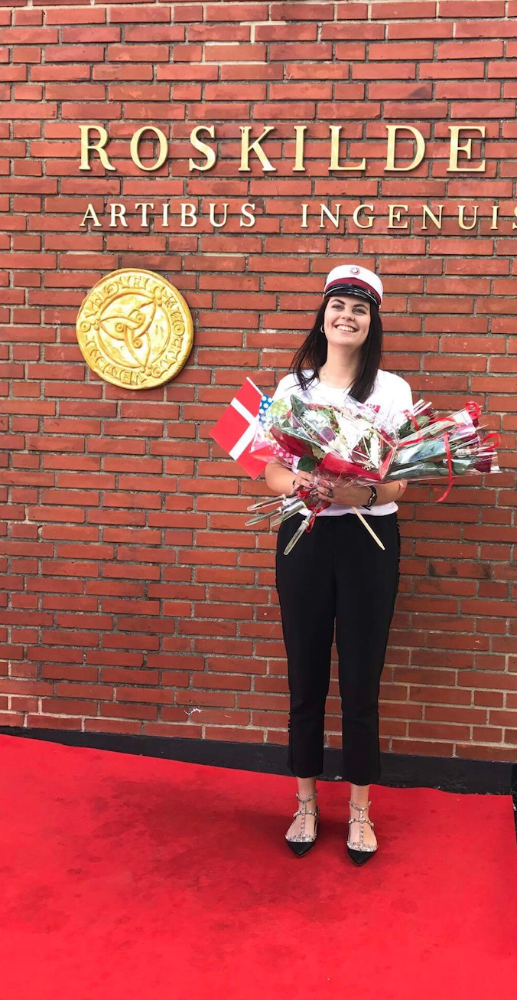
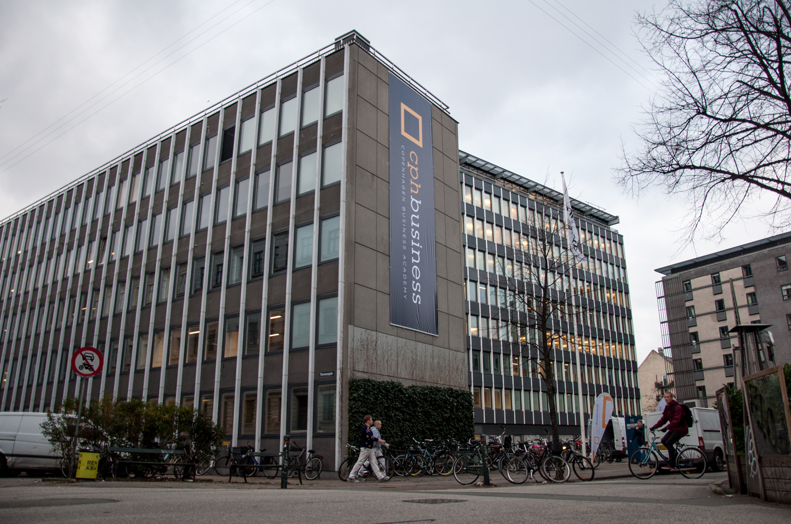

Uddannelse
Udannelseshistorik
Igennem min STX-eksamen fandt jeg ud af, at jeg lærer bedst med fingrene i muldjorden, så at sige, hvorfor jeg har valgt en videregående uddannelse med praktisk erhvervserfaring, som alligevel giver mig muligheden for en akademisk profil via kandidatgrad.



| STX (Studentereksaen) ved Roskilde Katedralskole, RKS - Sproglig linje med 4 A-fag: Spansk, Engelsk, Historie & Dansk. Derudover Samfudnsfag B, Psykologi B. | AP & PBA (Professionsbachelor), ved CPH Business Acamdemy. Erhvervsøkonomisk uddannelse med fokus på Logistik og E-handelsprincipper. Uddannelsen indeholder fag såsom Supply Chain Management, statistik, økonomi, distribution, dataanalyse og digital markedsføring. |